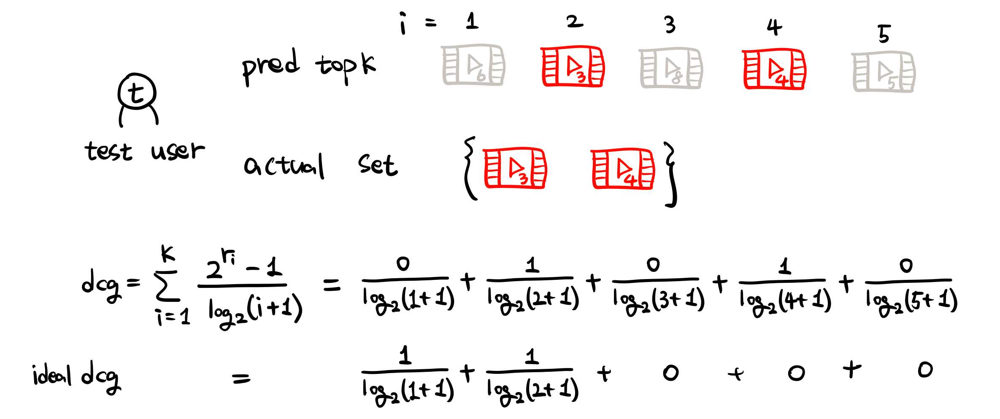

Implicit data에서의 nDCG#
Trirank: Review-aware explainable recommendation by modeling aspects#
EXPERIMENTS > Evaluation Metrics.
\(Z_K\)는 제일 좋은 성능일 때를 1로 만들기 위한 normalizer이다. \(rel_i\)는 번째 아이템의 graded relavance이다. (implicit data이기 때문에) \(r_i\)는 1 또는 0이며, 1일 때는 아이템이 test set에 존재할 때이고, 0일 때는 그렇지 않을 때이다.
예시#
예를 들어 \(K=5\)라고 해보자.
다음과 같이 \(t\)라는 테스트 유저가 있고, 이 유저는 0~4까지 사용(클릭)했고 5~9 아이템은 사용하지 않았다고 해보자
사용한 아이템을 train과 test로 나누게 될 것이다. 그리고 train으로 학습이 진행될 것이다. 이제 테스트 시간이 왔다고 하자.

k = 5
actual_set = set([3, 4])
pred = [6, 3, 8, 4, 5]
모델이 예측한 결과가 [6, 3, 8, 4, 5]라고 하자. 순서는? 모델에 따라 다르겠지만 implicit data(1 or 0)인 경우 예측 확률이 1에 가까운 순서로 정렬한다. 그리고 테스트 유저가 실제로 사용했고 test 셋으로 분류된 아이템은 actual_set = set([3, 4])였다. 이 actual set에서 순서는 사용되지 않는다.
idcg를 구해보자. idcg는 모델 예측이 actual_set으로 1위부터 쭉 나열된 경우, 말그대로 ideal한 상황이다.
import numpy as np
# idcg
cal_num = min(k, len(actual_set))
idcg = sum([1.0 / np.log2(i + 1) for i in range(1, cal_num+1)])
print(f"idcg : {idcg:.4f}")
idcg : 1.6309
dcg를 구해보자. dcg는 \(K=5\)까지 \(\sum_{i=1}^{K} \frac{2^{rel_i}-1}{\log_2(i+1)}\)를 계산한 값이다.
## dcg
dcg = 0
for i, item in enumerate(pred, start=1):
if item in actual_set:
dcg += 1.0 / np.log2(i + 1)
print(f"dcg : {dcg:.4f}")
dcg : 1.0616
ndcg는 dcg를 idcg로 나눈 값이다.
# ndcg
ndcg_k = dcg / idcg
print(f"idcg : {idcg:.4f}, dcg : {dcg:.4f}, ndcg : {ndcg_k:.4f}")
idcg : 1.6309, dcg : 1.0616, ndcg : 0.6509